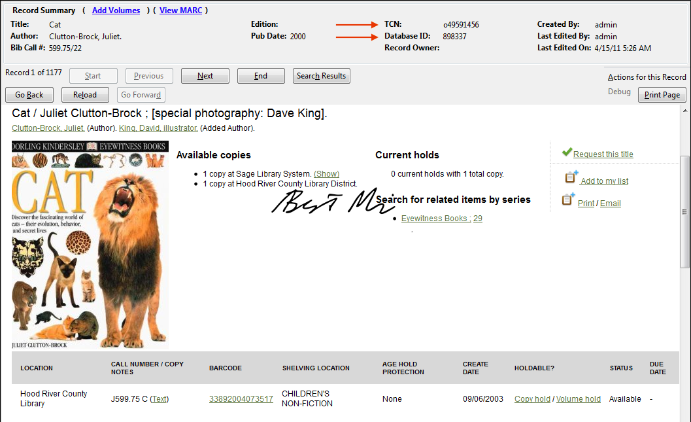

Cataloging Overview
When we talk about the “Cataloging” portion of Evergreen, we are talking primarily about the features that roughly correspond to the options available on the “Cataloging” menu option of the staff client.
When you go to the “Cataloging” section in the top menu of Evergreen, this is what you’re looking at:
Search the Catalog
There are multiple ways to access this screen throughout Evergreen. One of the most commong ways is either through the main landing page when you open the staff client:
When searching where the arrow points, you’re perfoming a generic keyword search. Clicking on the “Search the Catalog” button or selection from the Cataloging menu will place you in the Advanced search landing page.
Clicking on the arrow to the right of the “Search the Catalog” button will also allow you to perfom TCN/Database ID searches which are described below. You can also reach these through the Cataloging dropdown menu.
Once you click on the “Search the Catalog” button or select it from the drop down, this is the screen you are presented with. This is essentially the Advanced Search Screen. You have options to search by Numeric values (ISBN/ISSN/Call Number/LCCN/TCN/Item Barcode) or an “Expert” search which allows you to search within fields and subfields or MARC records. Be sure to leave the “Search Library” set to the top level “Sage Library Consortium” if you are using this option.
Retrieve title by TCN
This is for searching at the Bibliographic record level. TCN stands for Title Control Number and is located in the upper, brief information section when opening a record within the staff client.

These two numbers are important for enabling quick location and editing of MARC records within Evergreen. If you have questions about a certain MARC/Bibliographic record, mentioning the TCN/DB ID to Beth or Brent is extremely helpful in locating information about it.
Retrieve title by Database ID
This is where you would enter the Bibliographic record’s database ID to retrieve a single title.
Display Item
Choosing the “Display Item” option simply brings up the versitile “Item Status” screen. Here you can see item information as well as edit.
Manage Copy Buckets
Copy Buckets can be very useful when editing a large collection of barcoded items that you can’t do in one session. Or, if you’d like to share your batch of “to be edited” items with another staff member.
When you first choose this option, you will need to create a bucket for yourself by selecting “New Bucket”. This interface is great for doing batch requests on items, batch edits on attributes (Shelving Location, Copy Status, Price).
Manage Record Buckets

When you first select this option you’ll be placed into the “Bucket View” tab. If you haven’t created a bucket previously, you’ll need to create one by clicking on “Bucket Actions > Create New Bucket”. You’ll then see your bucket title appear next to a Bucket #. Write this number down, as it how other users can view or update your bucket from other workstations. If you have a group of Records you’d like me, Beth or David to look at, placing them in a Record/Copy Bucket and sharing the number with us is an easy way.
You will then go to the record query tab to search for records to load into the staging “Pending Records” tab. Note: you are loading records, not items. So there won’t be any barcodes listed. TCN and Database ID numbers are the ones you should be concerned with here. You can query Evergreen by searching for a term/title and then, when you find the correct one, highlight it and click “Add Selected to Pending Records”. You can do this with multiple items as well. It will then move those records into the staging tab: “Pending Records”. I would advise against clicking “Add All to Pending Records”. This will load ALL your search results into the “Pending Records” screen. There is not an easy way to delete records from the “Pending Records” screen, so use cautiously.
Now you can move over to the “Pending Records” tab. Here you can select which items of those you found are really the ones you want to put into your Record bucket. Select which records you’d like and then click “Add Selected to current Bucket”.
In the “Bucket View” you can finally manipulate the records how you would like. Either by:
-
Show All in Catalog: This will bring up all the records in the OPAC style view for you to examine.
-
Transfer Title Holds: Be careful with this option. You will basically move the holds that are on one title to another title. Useful if you have patrons selecting holds on the Audio Cassette version of Harry Potter’s latest when they meant to choose the Book record instead. Better to use this on a case-by-case basic than in one massive update.
-
Delete All Records: Be careful with this one as well. I think you know why
-
Merge All Records: If there are many different versions of the same record floating around, you can consolidate them with this option. Be careful with this as well.
-
Marc Batch Edit: Opens up the MARC Batch Edit function.
-
Export All Records: Allows you to export the bibliographic records to MARC21, USMARC, XML or Evergreen’s BRE (Bibliographic Record Entry) format.
Create New MARC Record

Import Record from Z39.50
MARC Batch Import/Export
MARC Batch Edit
Replace Barcode
Prompts you for the item’s current barcode and then brings up the combined Volume/Copy Editor where you can change the Call Number or Barcode of an item.
Retrieve Last Record
If you accidentally closed the tab of a record you were looking at or editing, this option will bring that screen back.
Manage Authorities
This is a Cat1 menu.
Link Checker
This is not used within Sage.